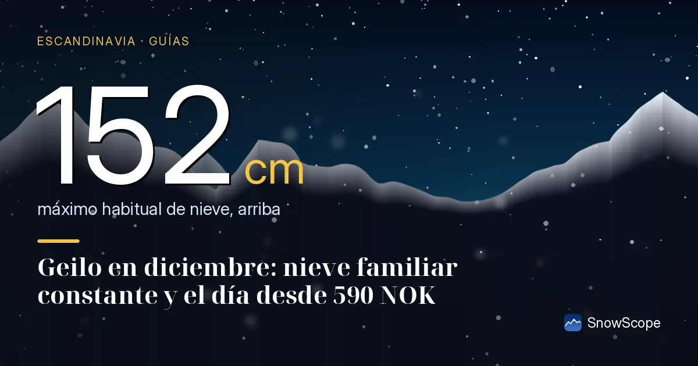

Geilo en diciembre: nieve familiar constante y el día desde 590 NOK
En la página oficial de Geilo el forfait de día empieza en 590 NOK, unos 56 EUR, y en nuestros 46 inviernos de histórico sus laderas suaves están entre las más constantes de Noruega en diciembre: el 96 % de los inviernos tenía 30 cm o más a media montaña (971 m) la semana del 15 al 21 de diciembre.
Consulta la previsión de nieve en tiempo real de Geilo en la app SnowScopeEspesor de nieve, alertas de nieve polvo y mapa 3D, gratis.
Principiantes y familias
Es la estación familiar noruega clásica: 35 km de pistas cartografiadas y 20 remontes en una meseta alta, con un desnivel modesto de 384 m entre 779 m y 1163 m. La palabra clave es suave. Para una primera semana de esquí importa más la nieve que el desnivel, y en Geilo la nieve empieza abajo: la base tenía 30 cm la semana del 15 al 21 de diciembre en el 80 % de nuestros inviernos, y en 46 inviernos nunca estuvo pelada el 15 de diciembre.


Buenos esquiadores
No hay largas pistas empinadas, pero sí nieve. En la cima, el 98 % de los inviernos tenía 30 cm o más todas las semanas de diciembre a partir del 8, y el 83 % tenía allí 60 cm o más en Navidad. Un 15 de diciembre típico da 42 cm en la base, 57 cm a media montaña y 68 cm en la cima.
La nieve detrás del consejo
Aquí la nieve es agua guardada en un paisaje frío y alto, y esa reserva se llena pronto: el primer día habitual con 30 cm a media montaña es el 14 de noviembre. Incluso un año flojo (1 invierno de cada 10) mantiene 35 cm a media montaña el 15 de diciembre.
La tendencia baja, pero sin dramatismo. La media de diciembre en la base pasó de 51 cm en los primeros 15 inviernos a 32 cm en los últimos 15; a media montaña, de 64 a 52 cm. Todas las semanas de Navidad de los últimos 15 inviernos tuvieron aún 30 cm a media montaña.
Coste
La página oficial de forfaits de Geilo muestra el día adulto desde 590 NOK y los de varios días desde 1138 NOK; los precios dependen de la fecha y del número de días. Al tipo de referencia del euro del 12 de noviembre, 590 NOK son unos 56 EUR. Es un precio «desde»: mira tus fechas en la tienda antes de contar con él.
¿O mejor Hafjell?
Hafjell, la antigua sede olímpica junto a Lillehammer, tiene mucho más desnivel (866 m) pero empieza muy abajo, a 192 m. Su nieve de diciembre es algo más fina a media montaña: 52 cm un 15 de diciembre típico y 85 % de inviernos con 30 cm la semana del 15 al 21 de diciembre. Sus precios también son dinámicos y no pudimos leer un importe fijo en su página oficial.
Para familias que quieren nieve fiable en diciembre en pistas fáciles, Geilo es la opción más segura.
Consejos para esquiadores
- Reserva cualquier semana desde el 8 de diciembre: desde entonces la cima tenía 30 cm en el 98 % de nuestros inviernos.
- Mira en línea el precio de tus fechas exactas: 590 NOK es el precio «desde».
- Geilo está en la línea de tren Oslo-Bergen: el tren te ahorra el coche en carreteras de invierno.
- Abrígate para frío intenso; la meseta está expuesta y los días de diciembre son cortos.
Más mapas (sitios externos)
Referencias y créditos
- Geilo: official lift-pass prices (2026-27), checked 13 November 2026 www.skigeilo.no/en/ski-pass
- Hafjell: official lift-pass page of the operator (prices by date; no fixed price quoted), checked 13 November 2026 www.alpinco.com/en/hafjell/buy-day-pass-1-8-days
- European Central Bank euro reference rates (2026-11-12) www.ecb.europa.eu/stats/policy_and_exchange_rates/euro_reference_exchange_rates/html/index.en.html
Sobre estas cifras
Cifras de nieve: histórico de nieve de SnowScope, 46 inviernos pasados (1980-81 a 2025-26) a las alturas de la estación, corregido por altitud (una estimación para una zona, no partes de la estación); «buena nieve» = 30 cm o más en el suelo de media en la semana. Mapa: nuestro espesor habitual el 15 de diciembre repartido sobre el relieve según la altura. Pistas y remontes: cartografía OpenSkiMap. Forfaits: tarifas oficiales de las estaciones, comprobadas el 13 de noviembre de 2026; los precios pueden cambiar.
Boletines oficiales de aludes: Varsom (NVE)
Citar este informe
Para investigación, docencia o prensa: cifras y gráficos reutilizables libremente bajo CC BY 4.0 con esta cita.
SnowScope (2026), Geilo en diciembre: nieve familiar constante y el día desde 590 NOK, https://snowscope.app/blog/es/2026/11/geilo-december-ski-trip-family-cheap-snow.html, consultado el 2026-11-14
SnowScope (Atlas Labs). (2026, November 14). Geilo en diciembre: nieve familiar constante y el día desde 590 NOK. SnowScope snow reports. https://snowscope.app/blog/es/2026/11/geilo-december-ski-trip-family-cheap-snow.html
BibTeX
@misc{snowscope2026geilodecemberskitripfami,
author = {{SnowScope (Atlas Labs)}},
title = {Geilo en diciembre: nieve familiar constante y el día desde 590 NOK},
year = {2026},
month = nov,
howpublished = {\url{https://snowscope.app/blog/es/2026/11/geilo-december-ski-trip-family-cheap-snow.html}},
note = {Published 2026-11-14 13:29 UTC; accessed 2026-11-14}
}· CC BY 4.0 · Métodos, datos y herramientas →
Geilo: nieve y temperatura según la altura, este invierno vs el pasado (herramientas) →
Sigue Geilo
Gratis: un aviso cuando llega la nieve y la previsión cada mañana.